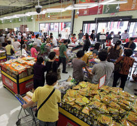

Our supermarket at
a glance
a glance
Jusgo Supermarket focuses on making the customers acquiring their favorite food and daily necessities in a comfortable and friendly shopping environment. So we can make people's daily livings more fulfilling. Also, we hope to introduce our colorful food culture of Asian to all the families in this pluralistic society of the United States.
Mission -
Our Strategy is to provide a wide-range of quality daily necessities at reasonable prices, freshness and consumer satisfaction for our customers.
Profile -
We established its first stores at Houston, Texas. Its mission is to provide Asian immigrants a modern, comfortable shopping environment for their favorite homeland food. With this new business approach, Jusgo has essentially started a new era in the Asian Supermarket business in United States.
Vision -
We also emphasize three key words, which make up the essence and character of the retail industry: "peace", "people" and "community". These precepts remain the same wherever we are doing business and we strive to act as a good corporate citizen of the local community.
Reasonable Prices
Quality
Products
Products
our blog
Learn more aboutour latest news